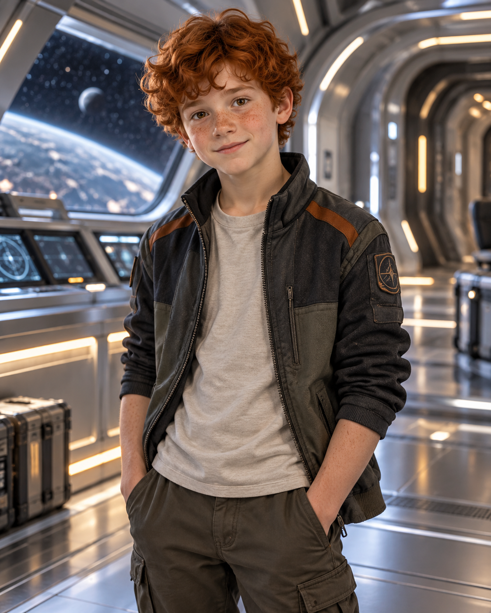
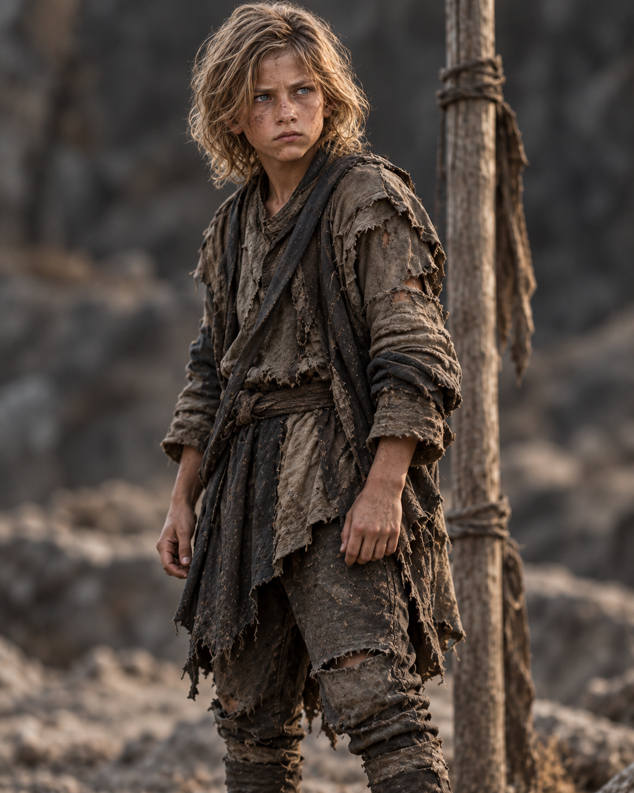
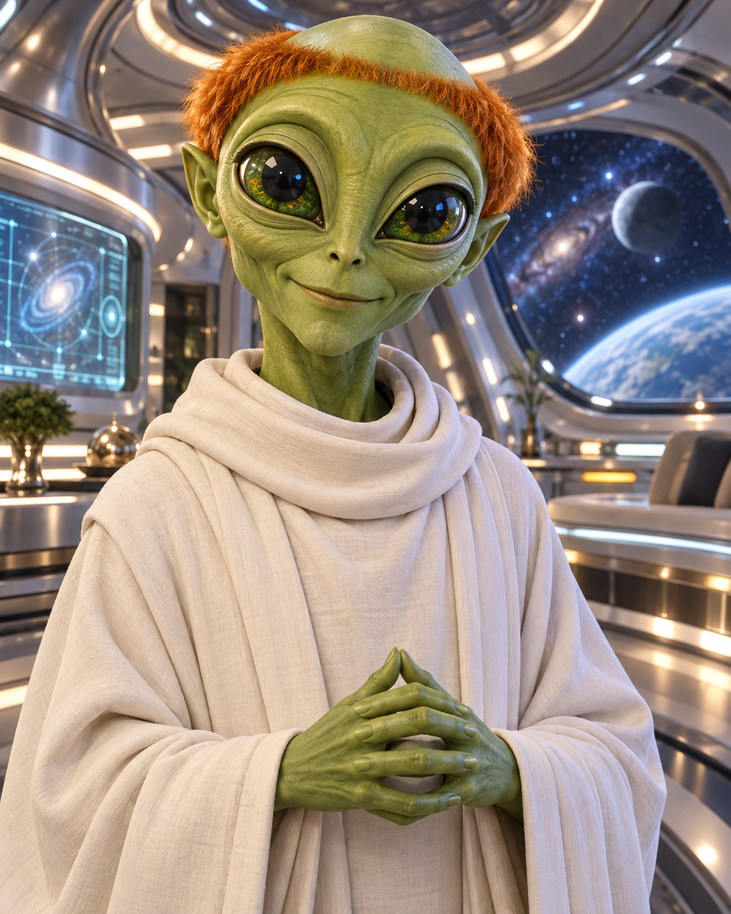
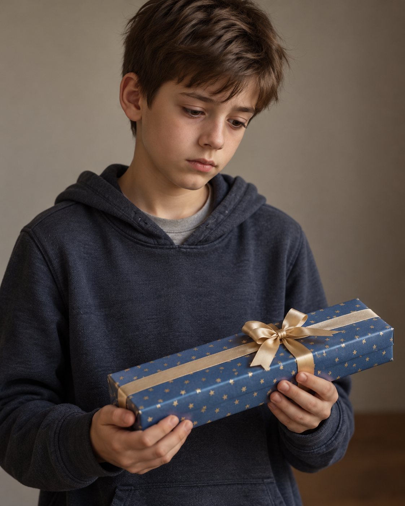

AGE
Twelve
Old enough to know a plan is dangerous. Young enough to try it anyway.

THE CENTRAL CHARACTER
“If everyone says it was a dream, Kevin starts looking for proof.”
Twelve years old. Impulsive. Kind. Fiercely loyal. Usually one brave decision away from making an impossible situation even more complicated.
WHO IS KEVIN?
Kevin is funny, impulsive and slightly more dramatic than he would ever admit. He has a habit of acting first and discovering the dangerous part immediately afterwards.
Beneath the jokes is a kind boy who feels everything deeply. Once Kevin cares about someone, leaving them behind stops being an option, even when staying could cost him everything.
His love for his family drives him across worlds, while his bond with Kieran gives him another person to protect—and another reason to find the way home.
AT A GLANCE
AGE
Old enough to know a plan is dangerous. Young enough to try it anyway.
FAMILY
The people at the centre of Kevin's world—and the reason he refuses to accept that someone is truly gone.
CLOSEST BOND
Thoughtful where Kevin is impulsive, and the person Kevin will cross any world to protect.
ALIEN ALLY
A calm, precise guide whose friendship changes Kevin's understanding of family, courage and the universe.
STORY APPEARANCES
Kevin is the narrator and central character of the Kev'alien trilogy.
PEOPLE CLOSE TO KEVIN
Family and friendship give Kevin something worth crossing the universe for.

CLOSEST FRIEND
Careful, clever and quietly funny, Kieran becomes the person Kevin cannot imagine leaving behind.

FRIEND AND GUIDE
Calm under pressure and endlessly precise, Nivek guides Kevin through dangers neither of them expected.

FRIEND ON EARTH
Practical, loyal and willing to believe Kevin when the truth sounds completely impossible.
ONE IMPULSIVE BOY
Kevin does not become brave because he stops being afraid. He becomes brave because someone he loves needs him—and once that happens, not even another world can make him turn back.
Meet the Rest of the Cast